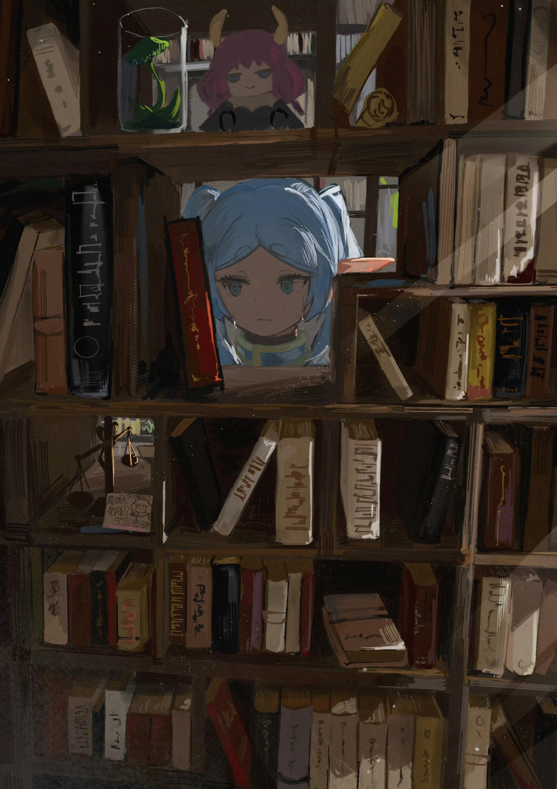

2025/12/7，夜，于北京
居然能找到这个地方吗，真有你的。
如你所见，这是一个记录我个人学习笔记和一些小成果的地方。
笔者目前是一名物理学专业的普通本科生，之所以建这个小网站，在这个大概率没人发现的地方写些文字，也是希望能勉励现在无所作为的自己，能挣扎着做出一些哪怕微不足道的改变。倘若未来不可避免地走向平庸，也能有着一处痕迹曾记录下我尚还有些不甘的尝试。
自己的爱好是音乐、独立游戏和天文摄影，梦想是成为厉害的物理学家。
那么，请多指教。

2025/12/7，夜，于北京
居然能找到这个地方吗，真有你的。
如你所见，这是一个记录我个人学习笔记和一些小成果的地方。
笔者目前是一名物理学专业的普通本科生，之所以建这个小网站，在这个大概率没人发现的地方写些文字，也是希望能勉励现在无所作为的自己，能挣扎着做出一些哪怕微不足道的改变。倘若未来不可避免地走向平庸，也能有着一处痕迹曾记录下我尚还有些不甘的尝试。
自己的爱好是音乐、独立游戏和天文摄影，梦想是成为厉害的物理学家。
那么，请多指教。
2026/10/10，夜，于北京
不知为何，忽然想起来这个荒废了许久的小网站。
过去的一年，是我大学生活以来经历的最为迷茫无助的一段日子。这里曾记录着自己的诸多郁闷，现在呢，自己打算删去先前的所有随笔，也不愿再写一些琐碎的文字了。我所期冀的，是真正的改变与成长。
也是，无需再去反思些什么。自己已然下定决心，一定要逃离这个令人难以呼吸的地方。自己或许做不到锋芒毕露，但现在也有不愿停下的理由。即便痛苦大于力量，即便此刻只能不甘地忍耐。
如果这世界，仍还想要驯服我。那就如你所愿吧，我会无耻地挣扎到底。
2024–2028
物理学，本科
